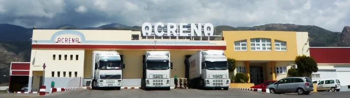

SAT ACRENA es una iniciativa de un grupo de agricultores que creyeron en la necesidad de agruparse para poder comercializar de forma conjunta sus producciones.
Actualmente son 236 socios los que comercializan sus producciones a traves de la SAT, con una superficie de 350 Has. cultivadas; también disponemos de semillero propio y de una superficie de producción de 5 Has. destinada a pepino y sandía.
SAT ACRENA está certificada por AGROCOLOR con extensión a las normas y protocolos UNEGAP (incluye GLOBAL GAP), GRASP,Field to Folk (F2F), Tesco Nurture (TN) y BRC.
Acrena cuenta con su propio semillero desde hace más de 30 años. Comenzó siendo un semillero pequeño de 8000 metros cuadrados y dedicado casi exclusivamente a producir planta para sus socios. Actualmente contamos con más de 4 hectáreas de semillero, de las cuales tres están invernadas, con estructura multitúnel y equipadas con moderna tecnología de contro climático y riego para la producción de toda clase de plantas hortícolas y en distintos tamaños de bandeja, plantas en lana de roca, perlita o coco para hidropónico. Planta con nesidiocoris para control biológico y cultivo ecológico.
Los clientes a los que vendemos nuestra producción corresponden a operadores internacionales y grandes superficies principalmente, dedicando solo un pequeño porcentaje a la industria, debido a que el tipo de productos y su calendario de producción se adapta a las carencias de los mismos en destino, rentabilizando la actividad de la entidad y sus miembros.
La distribución de nuestros productos, según mercados y expresándolos en porcentajes, queda según el siguiente detalle:
Nos encontramos ubicados, en España (Andalucía), en el Poniente Almeriense, en el Término Municipal de El Ejido, provincia de Almería.
Nos encontramos en Rambla Bernal, 6 - 04710 El Ejido, España
Nuestras Coordenadas Geográficas medidas en grados, minutos y segundos son:
Email: acrena@acrena.es
Teléfonos: +34 950 581 100, +34 950 581 112, +34 950 581 212
S.A.T. Acrena, Rambla Bernal 6 - 04710 El Ejido, Spain
Copyright © 2015 Schedia Ingeniería S.L. Todos los derechos reservados.